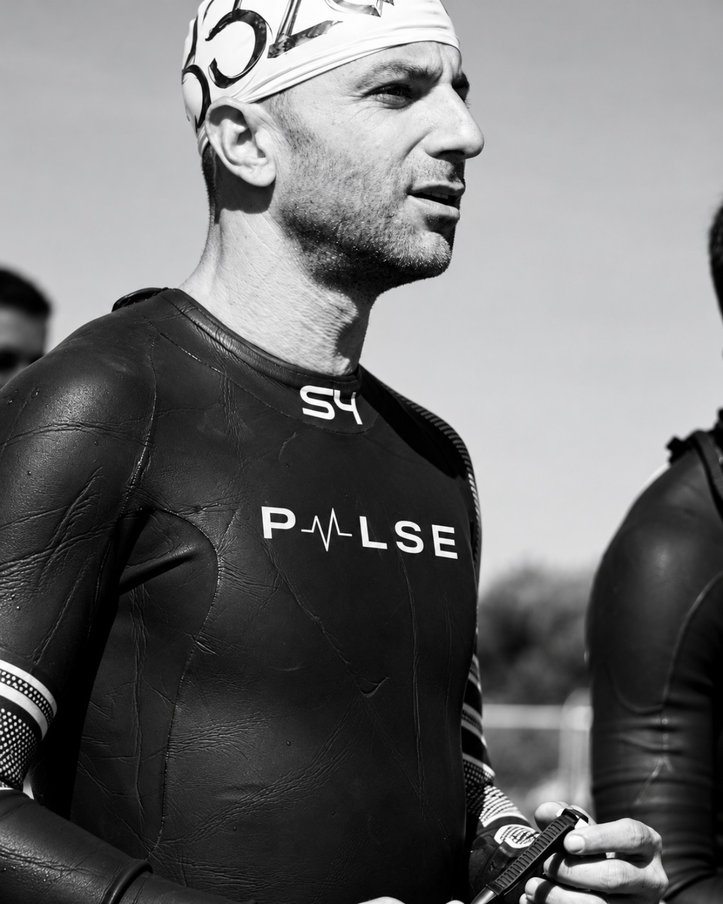
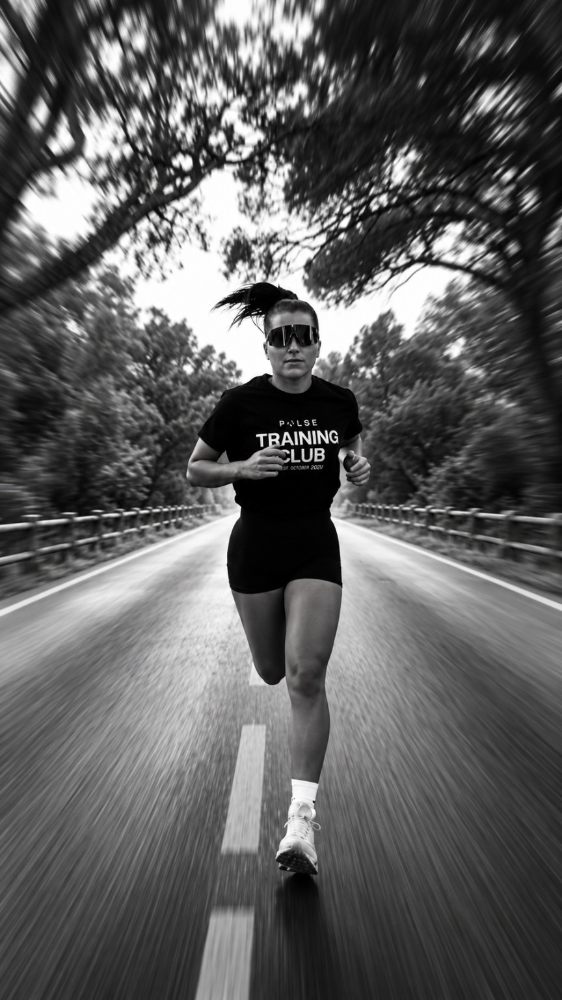
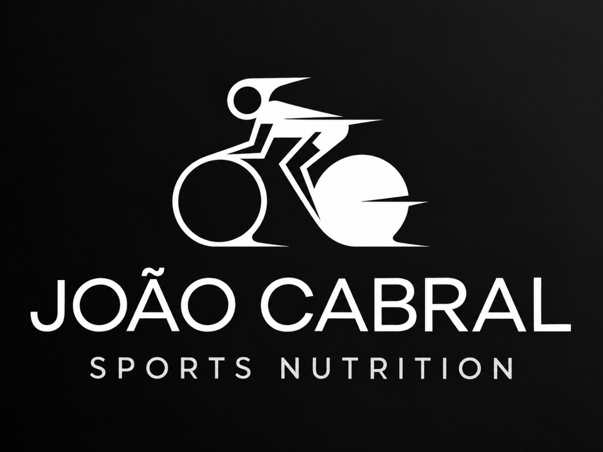
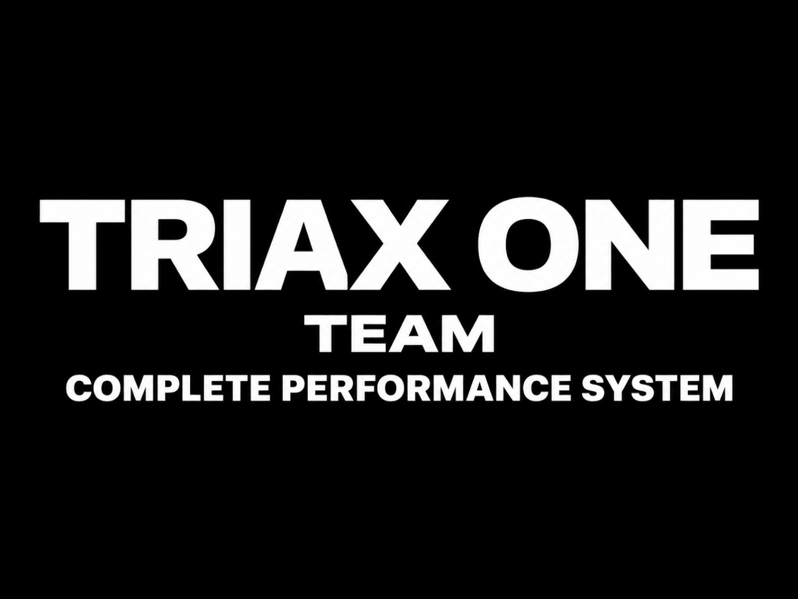
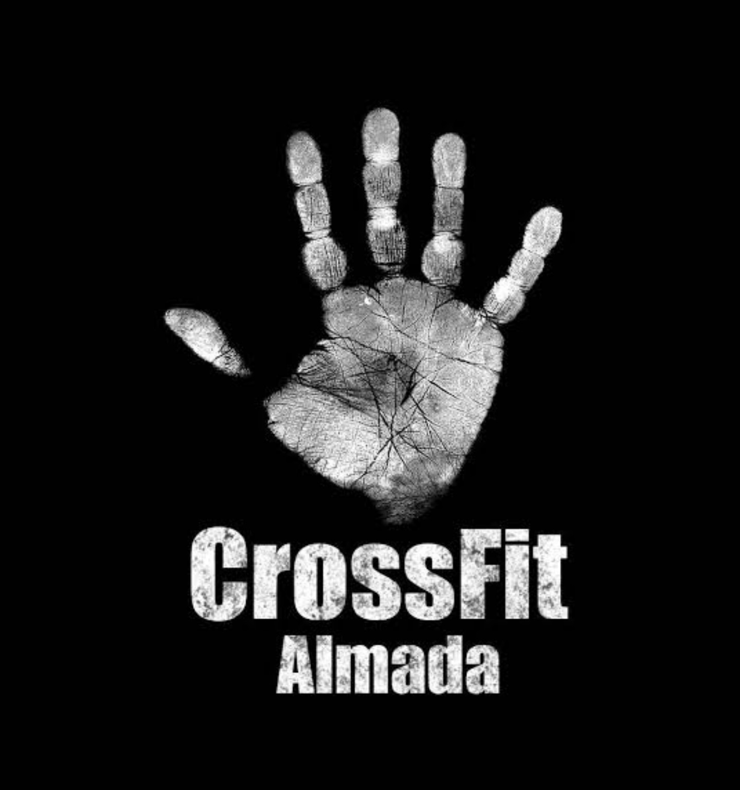

PULSE TRAINING CLUB / RUN. WALK. BIKE.
FEEL THE BEAT.FIND YOURPACE.
O PRÓXIMO PASSO É EM CONJUNTO.
01 / UMA COMUNIDADE EM MOVIMENTO
NÃO É SÓ
SOBRE IR.
É SOBRE
IR JUNTOS.
Há quem corra.
Há quem caminhe.
Há quem vá de bicicleta.
Escolhe a tua modalidade e vem ao próximo encontro.
Encontra o teu ritmo02 / RUN. WALK. BIKE.
TRÊS FORMAS.
A MESMA ENERGIA.
A pé ou sobre duas rodas.
O movimento é o ponto de encontro.
03 / O RITMO DA SEMANA
HÁ DIAS QUE
PEDEM MOVIMENTO.
- TUETERÇA
- THUQUINTA
- SATSÁBADO
- SUNDOMINGO
Confirma a modalidade, a hora e o local com a Pulse.
04 / JUNTA-TE AO MOVIMENTO
QUAL É
O TEU RITMO?
Escolhe a modalidade e prepara a tua mensagem.
05 / OS FUNDADORES
QUEM PÕE A PULSE
EM MOVIMENTO.
Fábio Teixeira e Rita Monteiro.
Os fundadores da Pulse Training Club.

FÁBIO TEIXEIRA
Cofundador
RITA MONTEIRO
Cofundadora06 / AS NOSSAS PARCERIAS
BOA ENERGIA.
BOA COMPANHIA.
As marcas e os projetos
que caminham com a Pulse.



QUERES SER NOSSO PARCEIRO?
Vamos conversar sobre como podemos crescer em conjunto.
07 / COLEÇÃO PULSE
LEVA O PULSE
CONTIGO.
A mesma identidade. Dentro e fora do treino.
T-SHIRT
Saber maisCAMISOLA DE ALÇAS
Saber maisTÉCNICA DE MANGA COMPRIDA
Saber maisBONÉ
Saber maisTOP DE TRIATLO
Saber maisTamanhos e disponibilidade: confirma com a Pulse.
08 / ANTES DO PRIMEIRO PASSO
MENOS DÚVIDAS.
MAIS AÇÃO.
Como posso começar?
Entra numa das comunidades ou contacta @pulse.training.
É só para quem já corre?
Há Run, Walk e Bike. Fala com a Pulse para encontrar o encontro adequado ao teu ritmo.
Quando e onde são os encontros?
Consulta as comunidades ou o Instagram para conhecer os horários e os locais.
Preciso de me inscrever?
Pergunta à Pulse pelas condições de participação e pelo equipamento necessário.
A CONVERSA CONTINUA AQUI@pulse.training